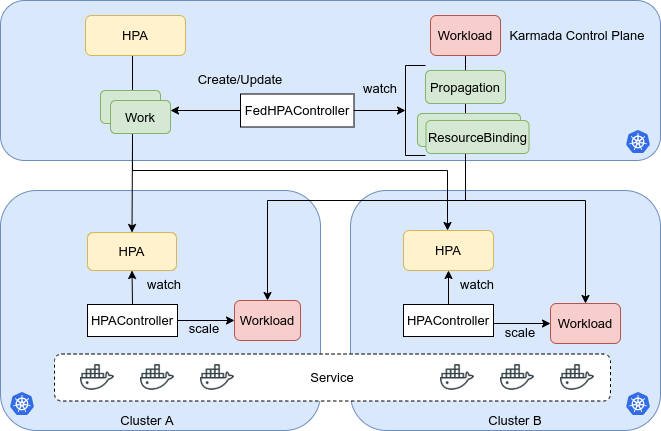

Federated HPA
Summary
HPA is a widely used approach to improve the stability of apps dealing with burst of request and resource utility. We can run our apps on multiple clusters as easy as a single cluster with Karmada, but Karmada lacks the HPA support now. This proposal introduces a new component FederatedHPA to Karmada and enables Karmada to autoscale workloads across clusters. It also tries to minimize the differences of the user experience between HPA on a single cluster.
Motivation
Goals
- Bring HPA from single cluster to multiple clusters.
- Compatible with the HPA related resources in the single cluster.
- Tolerate the disaster of member cluster or karmada control plane.
- It is better to integrate well with the scenarios such as workloads shifting and cloud burst.
- It is better to support both Kubernetes HPA and customized HPA.
Non-Goals
- Deal the workloads with different subset of services.
Proposal
User Stories (Optional)
Story 1
For a platform developer using Kubernetes, now I want to use Karmada to run apps on multiclusters. But the CD ecosystem is built based on the single cluster and the original HPA is heavilly used. So I want to migrate the HPA resources to multiclusters without too much efforts. It is better to be compatible with the schema of HPA used in single cluster.
Story 2
For an application developer, I create a HPA CR for the application running on Karmada with FederatedHPA enabled.
target cpu util 30%
min replica 3
max replica 100
Suddenly, one of the member clusters which my application running on stops working and can't scale up new pods. Unfortunately, a request burst is comming into the application. The CPU util of pods becomes higher than 30%. It will need 100 Pods totally to take the request burst. I hope the Karmada FederatedHPA can scale up new pods in other healthy clusters.
Story 3
As an administrator of the Karmada&Kubernetes platform, I receive an alert that the Karmada control plane stops working and any requests to the Karmada control plane are failed. There are many applications running on the platform heavilly depend on the HPA to handle the unpredictable burst of requests. The chance of RCA occurred becomes really high if the system can't tolerate the failure of federation control plane. So I hope the Karmada FederatedHPA can scale in the member clusters even if the Karmada control plane is down.
Notes/Constraints/Caveats (Optional)
- The workloads/pods in different member clusters selected by the same HPA CR/resource share the load of the application equally. For example, 10 pods of the application are spread into two member clusters with distribution
cluster1: 3 pods, cluster2: 7 pods, so the 3 pods in cluster1 take 3/10 of total requests and 7 pods in cluster2 take 7/10 of total requests. Scenarios don't meet the restriction are not considered in this proposal.
Risks and Mitigations
Design Details
Architecture

There are no new CRDs or resources introduced in this design. All the core functions are implemented in the FederatedHPAController.
1. The Kubernetes HPA components are still used in the member cluster and can work standalone.
1. The FederatedHPAController is responsible for the purposes
1. Watch the HPA resource and PropagationPolicy/ResourceBinding corresponding to the Workload, to learn which clusters the HPA resource should propagated to and what weight the workloads should be spread between clusters.
1. Create Work corresponding to HPA resource to spread the HPA to clusters. Distribute min/max fields of the HPA resources between member clusters based on the weight learned.
1. Redistribute 'some' fields of the HPA resources after PropagationPolicy/ResourceBinding corresponding to Workload is changed.
1. There will be ResourceInterpreterWebhooks provided for different types of Workload. They are responsible for retaining the replicas in the member clusters and aggregate statuses.
How FederatedHPAController learn the propagation information corresponding to the Workload
When a new HPA resource created or changed, the FederatedHPAController should know the propagation and weight information of the corresponding Workload. How does the FederatedHPAController know it? The FederatedHPAController will easily find the corresponding Workload based on the field ScaleTargetRef and then will find the PropagationPolicy resource based on the matching of ResourceSelectors.
For the weight information, because the karmada scheduler already plays the role to schedule the replicas, the FederatedHPAController can simplely reuse the scheduling result to learn the weight. The HPAController in the member cluster scale the Workload in the member cluster directly, it will conflict between the karmada scheduler. We can retain replicas in the member cluster by using feature resource interpreter webhook.
How to deal with the spec.replicas of the Workload in the control plane
In the original Kubernetes HPA and Workload(Deployment, for example), HPA scale the workload through the scale subresource of Workload. Then, the field replicas will be modified to the desired number. But in this design, HPAController in the member cluster work standalone and don't scale workloads through control plane so that the actual number of pods in the member clusters don't match the spec.replicas of Workload in the control plane. This mismatch would cause incident when spec.replicas in control plane is much smaller than in member clusters and user delete the HPA resource. To solve this problem, FederatedHPAController can collect the sum of spec.replicas values from member clusters and set it to the scale subresource of Workload in the control plane.
Even the spec.replicas of Workload in the control plane matches the actual total replicas in the member clusers, every time the spec.replicas of Workload in the control plane is modified, the replicas distribution in the Work re-calculated by Karmada scheduler most probably don't match the actual distribution in the member clusters. The mismatch also would cause incident mentioned above. To solve this problem, we can split it into two sub-problems
* How to gracefully shift workload in member clusters when desired distribution calculated by the karmada scheduler and actual distribution among member clusters differ substaintially. This may caused by modification of the PropagationPolicy or the remove of HPA resources controlled by the FederatedHPAController. Without the graceful shifting progress, the service may get out of capacity. In the future, features such as Federated Pod Disruption Budget may are needed to solve the problem here.
* How to control the difference between the actual distribution in member clusters and the desired state the karmada scheduler calculated even the FederatedHPA is enabled. But this problem will not be too critical if the first problem is solved.
It is better to solve the first sub-problem in another proposal. So we will leave this problem until the first one is solved.
How to deal with the situation that spec.replicas is 1
The workload can be spread into multiple member clusters when the spec.replicas in the control plane is greater than 1. The disaster of one member cluster and control plane can be tolerated because the workload can be scaled in other member clusters. But if the spec.replicas is 1, the workload and HPA resource would only be spread into one member cluster. If the member cluster and control plane are out of service in the same time, the workload can't be scaled.
How to integrate with and migrate from existing HPA resources
For some scenarios, people may want a friendly mechanism to control what HPA resources can be controled by FederatedHPAController
1. There are already many HPA resources in the control plane managed by PropagationPolicy and OverridePolicy before the Karmada support FederatedHPA natively. For some risk concerns, the administrator of the platform wants to migrate these HPA resources to be managed by the FederatedHPAController step by step.
1. There are already many HPA resources in the control plane managed by PropagationPolicy and OverridePolicy before the Karmada support FederatedHPA natively. But in the same Karmada control plane, some users want to use the native FederatedHPA but others want to remain the old ways. The FederatedHPA should not conflict with the HPA resources managed by the old ways.
To meet the requirements of above scenarios mentioned, a label federatedhpa.karmada.io/enabled=true/false for HPA resources will be introduced.
How user stories are addressed
Story1
Suppose platform administrator create a ClusterPropagationPolicy as a global default propagation for the Workload resources inside namespace apps in advance. According to the default ClusterPropagationPolicy, the weight between clustera and clusterb should be 4:1.
unfold me to see the yaml
apiVersion: policy.karmada.io/v1alpha1
kind: ClusterPropagationPolicy
metadata:
name: default
spec:
placement:
clusterAffinity:
clusterNames:
- clustera
- clusterb
replicaScheduling:
replicaDivisionPreference: Weighted
replicaSchedulingType: Divided
weightPreference:
staticWeightList:
- targetCluster:
clusterNames:
- clustera
weight: 4
- targetCluster:
clusterNames:
- clusterb
weight: 1
resourceSelectors:
- apiVersion: workload.example.io/v1alpha1
kind: Workload
In the term of user story 1, suppose a user create a Workload and an HPA in the apps namespace
unfold me to see the yaml
apiVersion: workload.example.io/v1alpha1
kind: Workload
metadata:
name: nginx
namespace: apps
labels:
app: nginx
spec:
replicas: 5
paused: false
template:
metadata:
labels:
app: nginx
spec:
containers:
- image: nginx
name: nginx
------------------
apiVersion: autoscaling/v2
kind: HorizontalPodAutoscaler
metadata:
name: nginx
namespace: apps
spec:
scaleTargetRef:
apiVersion: workload.example.io/v1alpha1
kind: Workload
name: nginx
minReplicas: 2
maxReplicas: 10
metrics:
- type: Resource
resource:
name: cpu
target:
type: Utilization
averageUtilization: 50
Then, ClusterResourceBinding resources will be created and scheduled by the Karmada scheduler
unfold me to see the yaml
apiVersion: work.karmada.io/v1alpha2
kind: ClusterResourceBinding
metadata:
name: xxx
spec:
resource:
apiVersion: workload.example.io/v1alpha1
kind: Workload
name: nginx
...
clusters:
- name: clustera
replicas: 4
- name: clusterb
replicas: 1
The FederatedHPAController continuously watchs the events of HPA and Karmada relevant resources(ClusterPropagationPolicy/PropagationPolicy or ClusterResourceBinding/ResourceBinding) to learn
* Which clusters the HPA resources should be propagated to
* What weight the workload should be spreaded to clusters. The weight will be used to spread the min/max of HPA to clusters
Then, FederatedHPAController create/update Work resources for HPA resource. Finally, the HPA resource will be spread to clustera and clusterb. The min/max of HPA resource in clustera and clusterb will be 1/8 and 1/2.